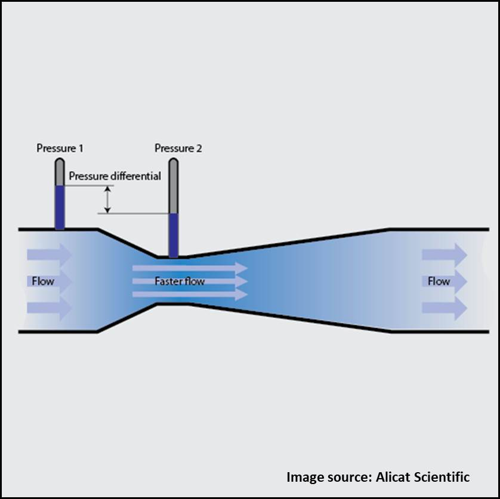
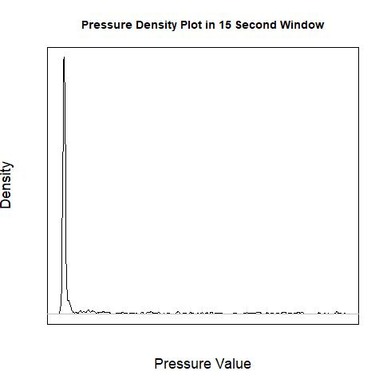
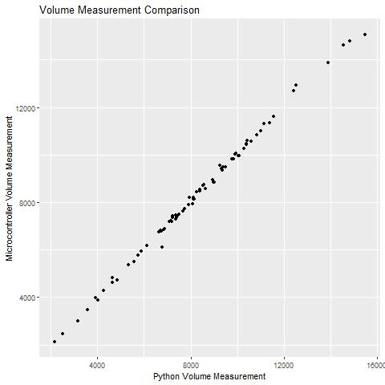

Here is a brief summary on a signal baseline tracking project. Click here to see the Github page.
 So to start, our device is a portable one that involves measuring breath flow rates. The way we do this is with a differential pressure flow meter, much like the one pictured. The challenge with this is with the actual pressure sensing. The differential pressure sensor we use has a baseline signal that needs to be accounted for in order to get an accurate pressure reading, and that baseline is sensitive to any movement. With a handheld or wearable device, this represents a challenge. The way we work around this is the have a one-way valve on the inlet of the device, so that when the person is inhaling we are at baseline. The challenge here just becomes how to discriminate between inhalation and exhalation reliably for a very wide variety of cases. The purpose of this project was to create a gold-standard for pressure processing to assess a microcontroller based method (essentially to evaluate the accuracy of our production algorithm).
 As it turns out, if you have more resources than a small microcontroller this is actually a very easy problem. I started by dividing the test into 15 second windows. Why 15 seconds? Because a person is extremely unlikely to exhale for a solid 15 seconds under standard conditions (not that it is hard to do, people just tend to breath a bit faster. You tried it, didn't you?). If we look at a 15 second window, the tightest grouping of data points is going to be around the baseline. The baseline is a much tighter distribution that the exhalation. The density plot to the left pretty clearly shows how obvious it is, with the giant spike being the baseline. I found that taking the 20th quantile was consistently close enough to the baseline, so in each 15 second window I take the 20th quantile of pressure values as a baseline, which I can then interpolate to get a full baseline.
 When we compared this method to the production microcontroller codes, we were easily able to assess which parameter set on the microcontroller best fit agreed with this reference. The plot to the left is a comparison between the two methods. Although the precision could be improved by various methods, this was enough of a reference to guide the decision on what paramters to use and move on to a more comprehensive validation.